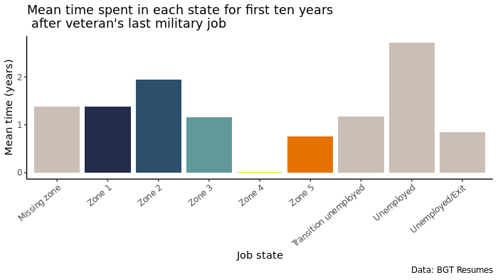
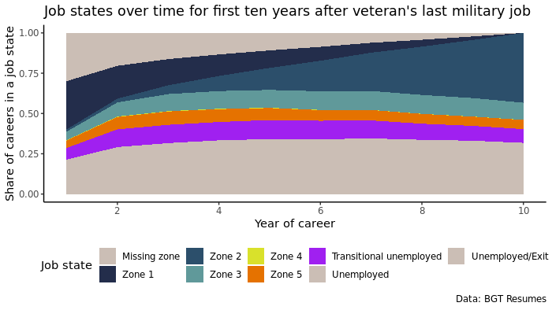

Sequence Exploration
Visualizing and exploring post-military veteran career sequences
Exploring veteran's whole career sequences
After cleaning the BGT data, we created our sequence objects using TraMineR. To begin, we created a sequence object using the whole career of veterans. This yielded 8,068 sequences of varying lengths.

Figure 1 shows the distribution of career sequence lengths for veterans.
When defining the sequence object, we specified to exclude left and right gaps in the sequence. Looking at a whole career, left and right sequence gaps have no substantive meaning, since there cannot be career gaps before or after a career has started or ended. Furthermore, because we were analyzing the entire career of veterans, we chose to include not only the five O NET job zones as job states, but also a separate state for military careers. Coding a military career state into the sequences allows us to contextualize subsequential sequence analysis of veterans after their last military job. We also included a state for missing O NET job zone so that it is not miscounted as unemployment.

Figure 2 shows the mean time spent in each state by veterans over their whole careers.

Figure 3 shows the distribution of sequence states over the years of veteran's careers. To account for differences in sequence lengths, we incorporated a line showing the number of valid sequences at each year.
Exploring first ten years after veteran's military exit sequences
To begin answering our research question about veterans careers, we needed to subset our sample to only look at careers after veterans exit the military. Additionally, after this preliminary analysis and some clustering, we decided to subset again to only the first ten years of a veteran's post military career to combat problems associated with differing sequence lengths.
When defining the sequence object, we needed to reconsider the substantive interpretation of left and right career gaps. Because for this sequence object we are looking in the middle of a whole career sequence, gaps at the right and left of the sequence have substantive meaning. Right gaps indicate transitional unemployment, or a period of unemployment after a final military occupation and a subsequent job. Left gaps could mean either unemployment or a career exit. Furthermore, there are no military states to encode for this analysis.

Figure 4 shows the mean time spent in each state by veterans for the first ten years after their last military job.

Figure 5 shows the distribution of sequence states over the first ten years after veteran's last military job.